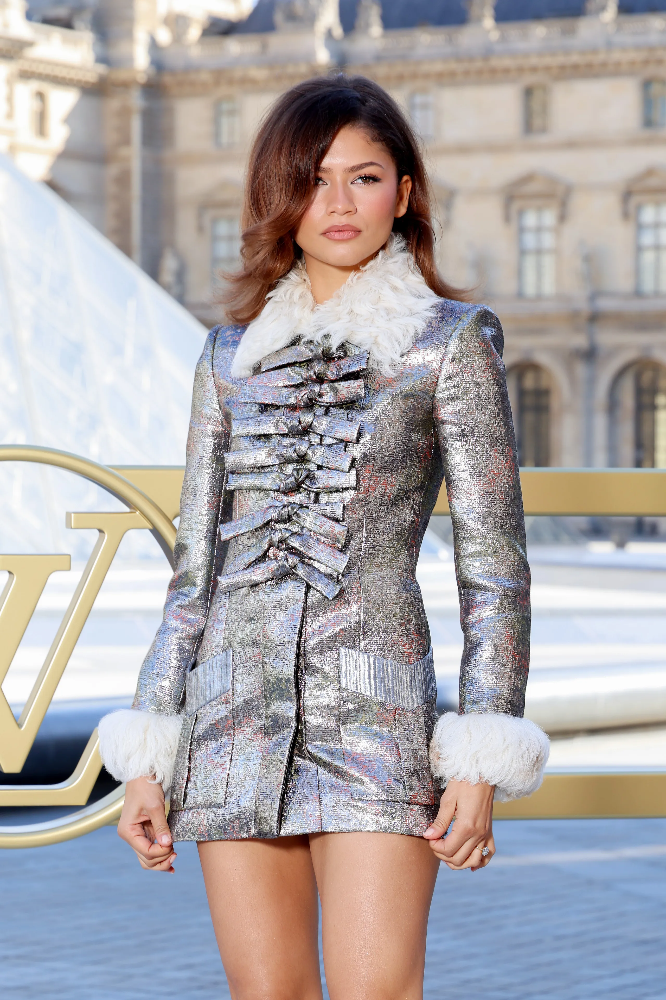

Zendaya is a famous american actress and singer. She was born and raised in Oakland, California and has acted in a lot of movies and shows including "Zapped", K.C. Undercover and Shake It Up. I invited her to the dinner because I love her as an actress and she's a nice person too. I think she would make a nice addition to the guest list.
Felix is an Australian rapper and singer based in South Korea. He was born in September 2000 in Seven Hills, Sydney and has 2 sisters, one older and one younger. During his childhood, Felix practiced taekwondo for twelve years, achieving a black belt and reportedly winning around 63 medals. In recent years he has also been a brand ambassador for Louis Vuitton. He has visited France many times over the years and can speak and decent level of French too. I invited him on this dinner because him and Zendaya have met before during a Louis Vuitton runway show so I think they would get along nicely.
Taylor Swift is an American singer-songwriter. Known for her autobiographical songwriting, artistic reinventions, and cultural impact, Swift is the highest-grossing live music artist, the wealthiest female musician, and one of the best-selling music artists of all time. I would like to invite her to the dinner too because I feel like she's well known and has also met these other celebrities before so she would get along with Felix and Zendaya since she has met them in some award shows.